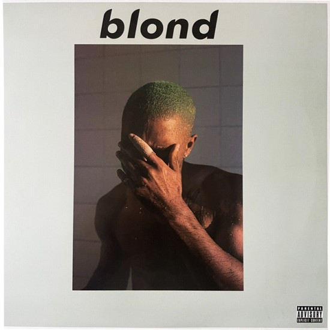
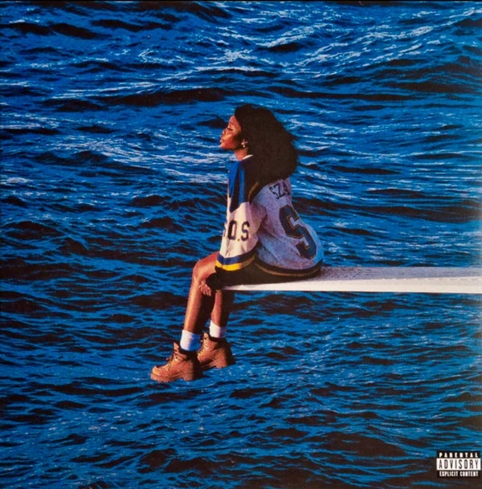
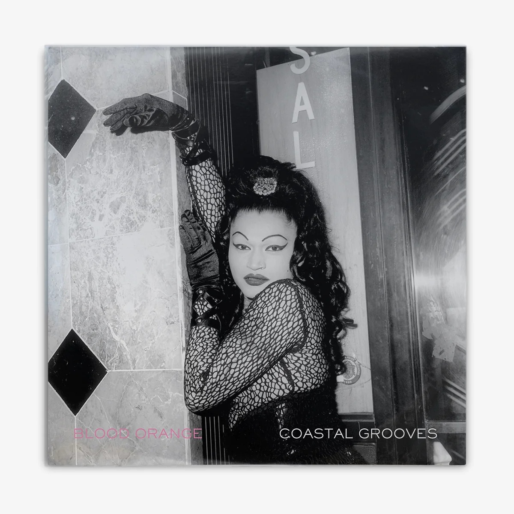
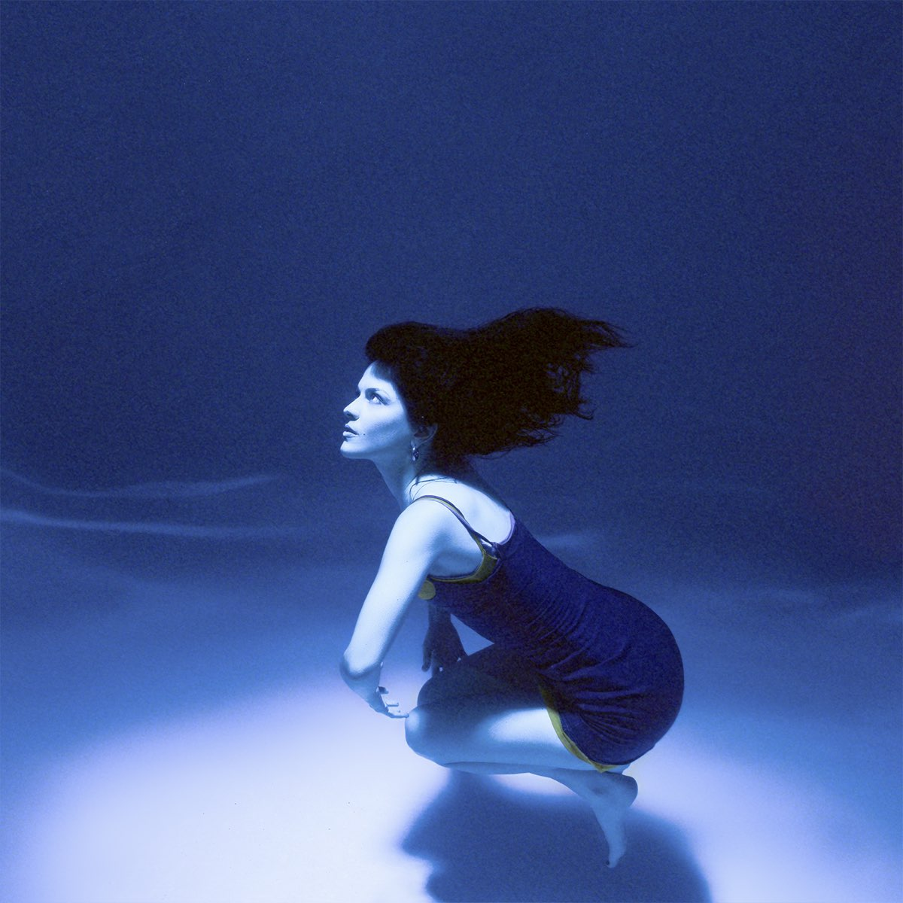
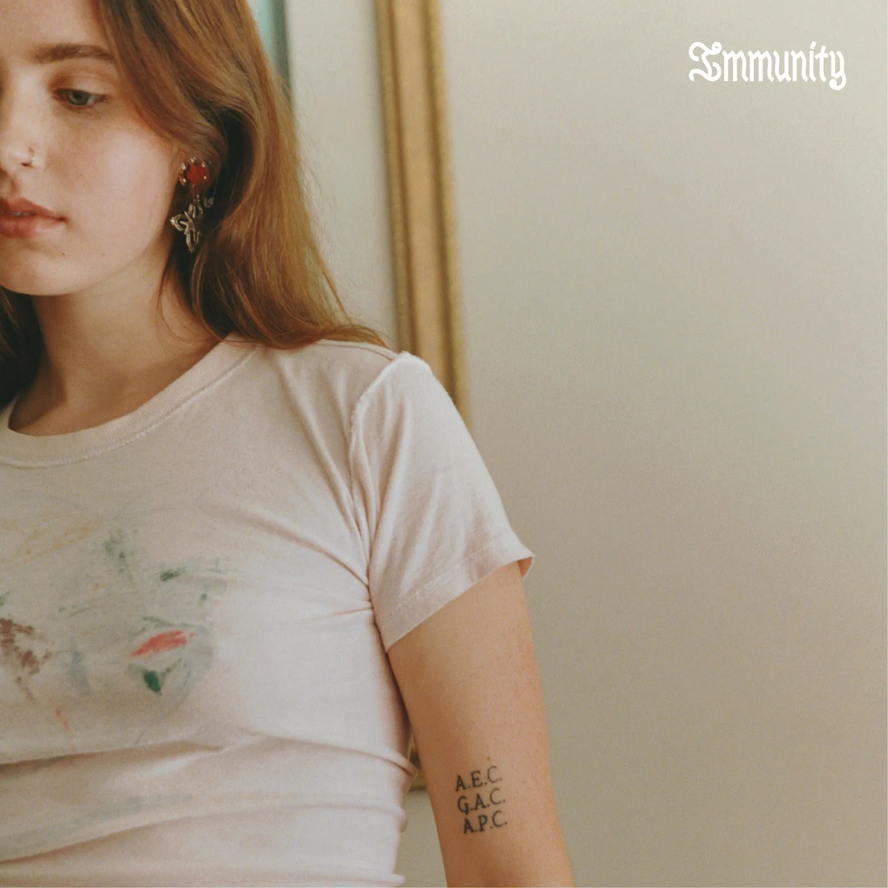
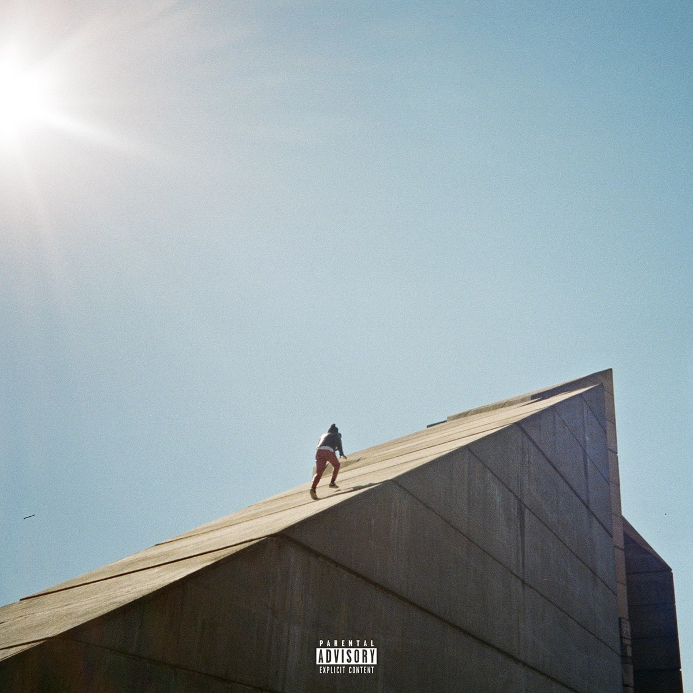
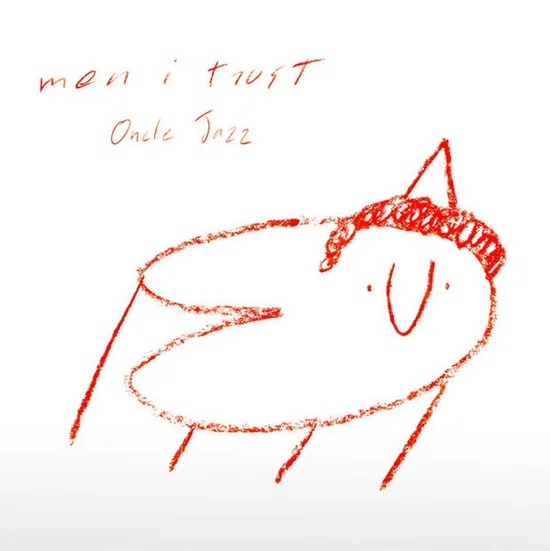

Spotify Chapters
Turning monthly listening into memories worth revisiting.
An independent product concept exploring how Spotify could transform monthly listening data into a personal archive of music, moments, and memories.
The opportunity
We remember the year. What about everything in between?
Spotify Wrapped has made reflecting on a year of listening feel like an event. But our relationship with music doesn't happen once a year.
Songs become attached to commutes, trips, friendships, late nights, new cities, ordinary Tuesdays, and entire phases of our lives.
Yet most of those smaller listening eras disappear into our history.
I saw an opportunity to explore what music reflection could look like at a more personal, monthly scale.
The concept
What if every month became a tiny time capsule?
I designed Spotify Chapters, a concept that transforms each month of listening into a visual memory archive.
Instead of focusing only on statistics, the experience brings together three things at once.
what you listened to + what defined the month + what you want to remember
The result is part listening recap, part digital scrapbook.
Users can revisit their favorite artists, albums, tracks, and listening patterns alongside personal photographs from that same period — creating a richer record of not just what they listened to, but what life looked and felt like while they were listening.
From data to memory
Designing beyond the numbers
Listening data is useful, but statistics alone don't always explain why a song mattered.
I wanted the experience to sit somewhere between data visualization and memory keeping.
Personal imagery provides the context. Together, they turn passive listening history into something more emotionally meaningful and worth returning to.








Experience principles
Making data feel personal
Listening insights should be understandable within seconds. Clear hierarchy, large statistics, recognizable artwork, minimal supporting copy.
The experience should feel different for every listener. Music, photographs, and listening behavior become the visual language of each recap.
Less an analytics dashboard, more something users might return to months or years later. Each month is part of an evolving personal archive.
The monthly experience
A story, not a dashboard
Rather than presenting the month as one dense analytics screen, I structured the recap as a sequence of smaller moments.
Each section reveals another part of the listener's month, allowing the experience to unfold more like a story than a report.
A snapshot of the month and its listening identity.
Favorite artists, albums, and tracks surfaced through strong visual hierarchy.
Personal photographs bring context to the music and connect listening behavior with real-life experiences.
Past months become something users can return to rather than disappearing once the recap ends.
A system that evolves every month
Consistent structure. Different story.
One challenge was creating a visual system structured enough to feel recognizably Spotify while still allowing every month to have its own personality.
The interface uses a consistent hierarchy and component structure, while album artwork, photography, listening data, and content naturally change the visual character of each recap. This allows the system to feel familiar without making every month feel identical.
Designed across devices
One experience, two rhythms
I designed the concept across both mobile and desktop, rather than treating desktop as an enlarged version of the mobile interface. On mobile, the experience is intimate and sequential — designed for tapping, scrolling, and quickly moving through memories.
On desktop, the additional space allows content, imagery, and listening data to become more editorial and immersive. The underlying story remains consistent while the composition adapts to the way each device is used.
Interaction & prototyping
Designed to unfold
Motion helps turn the recap from a collection of statistics into an experience. I prototyped interactions across mobile and desktop to explore how transitions, scrolling, layering, and progressive reveals could guide users through the month without overwhelming them with information at once.
The goal was not motion for decoration, but motion that creates pacing and makes each part of the recap feel intentionally revealed.
The archive
From recap to personal archive
January sounded different from June. June felt different from October.
The larger idea extends beyond any individual month. Over time, Chapters becomes a growing archive of listening eras — a way to look back and remember not only which songs were on repeat, but the life happening around them.
Together, those months tell a story that an annual summary alone can't fully capture.
Reflection
What I explored
This project gave me an opportunity to explore how behavioral data can become an emotional design material.
The most interesting challenge wasn't deciding which statistics to show. It was thinking about what could make those statistics meaningful enough for someone to want to return to them.
Pairing listening behavior with personal imagery shifted the experience from simply:
That distinction became the foundation of the concept.